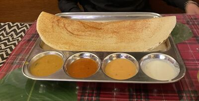
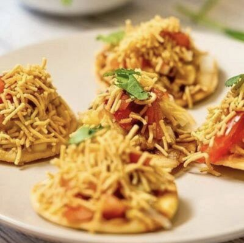
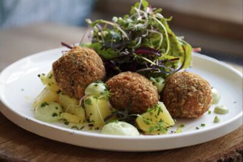
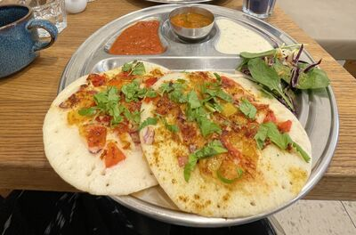

Indian restaurants in Prague, judged honestly.
What's authentic out of so many Indian restaurants in the city? What different dishes should you try?

Annamalai
Tastes like homeEverything about Annamalai sets it apart from other South Indian restaurants in the city. They prepare dishes on the spot when you order (it takes time to arrive and is worth the wait). You can tell it is home cooked, tastes vary from day to day, as they are supposed to when being prepared fresh everytime, but everything remains tasty. Super light on the tummy, and you can vary the spice level by asking them. In any other place I would mind the TV blaring Indian songs, but somehow, the vibe of the place is so authentic, with underground, dim-lit room, small and cosy, adorned with old school decor, that the TV with songs back to back actually reminds me of local joints back home. I love the peace, you can spend good time without being disturbed. On weekends they do special combo meals like Chicken Biryani with Chicken 65, boiled egg and yoghurt (although I am vegetarian, my partner tried this and loved it). Staff is relaxed and respectful, and one of them is a freelance student of Charles University and is very attentive and polite. The only South Indian I keep going back to.
Order: dosa, idli, and medu vada.

INDelicious Bistro
Street foodAnother Indian restaurant I keep going back to. It boils down to taste and despite being super tasty, I never feel bloated or super full after the meal. Really grateful for street food from across India.
Order: pav bhaji, spinach paneer paratha, vada pav, bhel.
No paid collaborations or review invites, just my experiences I compare the food in the city to what I have grown up eating :)
Vegan in Prague
plant-based, done properly
Creative plant-based food. Indian food is a cheat code for vegans — whole cuisines built on lentils, chickpeas and vegetables, no imitation anything. These are the places (Indian and not) I go back to.

Pastva
Fully veganThey rotate their menu, friendly staff, ridiculously tasty dishes. Love that they try to serve new cuisines. Burgers, risotto, dumplings, borscht, hummus, croquettes are my favourite here.
Palo Verde Bistro
Fully veganDreamy decor, love the mushroom lamps, and the cosmic skies! Super tasty spinach chimney and parmesan burger.

Dosa Dosa
Fully veganAgain, a repeat favourite and a perfect breakfast stop. I love the California dosa, masala dosa, uttapam and buckwheat noodles. Cold brew and desserts not to be missed.